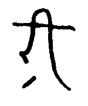
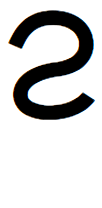
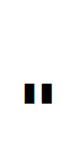

バート語(バート語:Bhátán, リパライン語:Phertarsvirle)は、PMCFアイル共和国バート人自治区で話されるシアン大語族ラネーメ語族ファスマレー語派アイル諸語の言語である。ラネーメ祖語から派生した言語であり、主にアイル共和国の闇島において話されている。話者数は三万人ほどである（話者数要考察。少なくとも「三万人は流石に少なすぎ」という結論になった。）ラネーメ祖語における有気無気の対立を保存している（という人もいる）（諸説あります）が、ラネーメ語族においてはあまり見られない屈折的な言語構造になっている。
| 唇音 | 歯茎音 | そり舌音 | 軟口蓋音 | |||||
| 鼻音 | m [m] | n [n] | ṇ [ɳ] | |||||
| 破裂音 | p [p] | b [b] | t [t] | d [d] | ṭ [ʈ] | ḍ [ɖ] | k [k] | (g [ɡ])*1 |
| ph [pʰ] | bh [bʱ] | dh [dʱ] | kh [kʰ] | gh [ɡʱ ~ ɣ] | ||||
| 摩擦音 | w [v ~ ʋ ~ w] | c [s] | s [z] | ṣ [ʂ] | h [x] | |||
| 接近音 | l [l ~ ɾ] | ḷ [ɭ] | ||||||
| ふるえ音 | r [r] | |||||||
| (x [ʃ])*2 | z [tʃ] | j [j] | y [ɥ] | ṣl [ʂɻ ~ ʂɭ] |
注：
| 語頭に立てる |
| 語頭に立たない |
長短のミニマムペアは少ないが、gháni「火」とghání「(主観的な)暑さ」などの例があるにはある。
バート語には高低のイントネーションがある。単語ごとに決まっているものではないので、アクセントでも声調でもない。と思ったが、fixed stressかもしれないという説が出ており、考察中である。
規則は以下の通り。

バート文字は、パイグ文字などから派生したラネーメ系文字の一つである。元々は完全なaアブギダ（「伝統表記」）である。しかし、現在では、元々の子音ゼロの字に母音符号のついた形をそれそのままで母音字として用いる、よりアルファベット的な書かれ方をする（「現代表記」）。
ただし、（現代表記であっても）子音字には随伴母音aが含まれるため、子音をそれ単体で表す時には母音ゼロの字が必要である。
| 唇音 | 歯茎音 | そり舌音 | 軟口蓋音 | |||||
| 鼻音 | | | | |||||
| 破裂音 | | | | | | | | |
| | | ||||||
| 摩擦音 | | | ||||||
| 接近音 | | | ||||||
| ふるえ音 | | |||||||
 |  |  |


 |  | ||
| a+長子音 | au+長子音 | i+長子音 | u+長子音 |
ラテン字転写ではṣはsに点のついた文字だが、バート文字ではcに点を付ける。現世での古い資料だと誤ってsに点をつけている例があるので注意。
 |  |  | |||
| ピリオド | コンマ | 疑問符 | 引用符 | 引用疑問符 | 感嘆符 |
関係詞を除き基本的に前置修飾。基本的に動詞を文末に置き、様々な格の名詞がそれを修飾するという体系である。動詞の前に名詞がどの順番で並ぶかは自由だが、格変化した名詞の方が名詞後置格+後置詞より前に出る傾向があり（ただし、名詞後置格+後置詞が内部に節を含んでいる場合などは、文構造の分かりやすさのため主語などを動詞の直前に置いたりもする。）、「名詞後置格+後置詞」は動詞より後に出ることもできる。歌や詩の場合は格変化した名詞が動詞より後ろに来ることも可能である。
以下の3品詞が基本である。
動詞：文の中核をなす。 名詞：格変化し、動詞の主体や対象となる。 後置詞：名詞に後続し、格のような働きをする。
以下、少数の語が属する感のあるグループである。
無変化動詞：hem一語のみが属する。活用形を持たず、主格を2つ取るなど、他の動詞とは大きく違った挙動を見せる。 副詞：活用せず、動詞を修飾する。 形容詞 終助詞 名詞接続詞 文接続詞 間投詞 関係代名詞 添詞
名詞は主格・無格・対格・属格・具格・後置格の6種の格を持つ。このうち、主格・対格は動詞を直接修飾し、属格は後続する名詞を修飾する。具格は基本的に動詞を直接修飾するが、「〜の上」「〜の近く」などの一部の後続名詞を修飾することもある。後置格は直後に後置詞を要求し、逆に後置詞は基本的に直前に後置格を要求する。なお、主格の人称に応じて動詞が人称変化する。無格は、「名詞接続詞で繋がれた名詞のうち最後の名詞以外」など、後続の語に付いた格語尾で意味上の格が判別できる場合に用いる。
名詞の曲用は、名詞の辞書形が子音で終わるか母音で終わるかによって大きく異なる。子音で終わるものを子音幹、母音で終わるものを母音幹と呼ぶ。
| 子音幹 | 主格 | 無格 | 対格 | 属格 | 具格 | 後置格 |
| 単数 | -Ø | -i | -ele | -án | -ai | -i |
| 複数 | -á | -á | -elená | -áná | -ainá | -iná |
例：ákíjam「東、太陽、日」
| 主格 | 無格 | 対格 | 属格 | 具格 | 後置格 | |
| 単数 | ákíjam | ákíjami | ákíjamele | ákíjamán | ákíjamai | ákíjami |
| 複数 | ákíjamá | ákíjamá | ákíjamelená | ákíjamáná | ákíjamainá | ákíjaminá |
| 母音幹 | 主格・無格 | 対格 | 属格 | 具格 | 後置格 |
| 単数 | -Ø | -dhel | -om -homá | -bhau | -ḍi |
| 複数 | -zá | -dhelá | -omá -home | -bhauná | -dhíná |
例：híja「心、こころ」
| 主格・無格 | 対格 | 属格 | 具格 | 後置格 | |
| 単数 | híja | híjadhel | híjaom híjahomá | híjabhau | híjaḍi |
| 複数 | híjazá | híjadhelá | híjaomá híjahome | híjabhauná | híjadhíná |
-omと-homá、-omáと-homeの差は特にない。
複数形後置格に後置詞hínaが後続する場合は義務的に縮約が起こり、子音幹なら-ína、母音幹なら-dhínaとなる。dで終わる子音幹名詞（例：dhárad）の複数形hína縮約形（dháradína）と、動詞（例：bhárúḷ）の一人称過去分詞（bháradína）を混同しないよう注意が必要である。
口語では単数後置格に後置詞hínaが後続する場合にも縮約が起こることがある。子音幹なら-ínaで複数の場合と同形である。母音幹なら-ḍínaであるが、hínaのhや複数形hína縮約形につられ-dhínaと発音される場合も多い。
直前の音節に有気音がある場合に、格語尾-dhel, -dhelá, -bhau, -bhauná, -dhínáは無気化するが綴りは保たれる。
人称代名詞は次の通り。なお、形態上は全て母音幹単数として曲用する。例えば、kiṣloの具格はkiṣlobhauであって、*kiṣlobhaunáではない。
| 一人称 | 二人称 | 三人称男 | 三人称女 | |
| 単数 | ápa | áma | kí | ká |
| 複数 | bháma(包括) bhá(除外) | mábha | kiṣlo | kaṣlo |
後置詞は変化せず、直前に後置格を要求して全体で一つの文節を構成する。
数詞は名詞として振る舞う。数詞の属格に単数形の名詞を続けることで「〜個の名詞」といった意味となる。数詞が2以上であっても単数形であることに注意せよ。（一般に、多数性を明示する表現を伴っている場合は複数形接辞を用いない。）
「Aが存在しない」という表現をする際は、基本的にAの単数形主格にám hemúḷを用いる。ただし、（「一般的にAが存在しない」ではなく）「一緒に来ているはずのBさんとCさんが共にまだ来ていない」というふうに、否定の対象が脳内で特定されている場合は、対象の数に合わせて単複を使い分ける。英語に慣れている人なら、「英語でa 名詞または無冠詞複数で言いたくなったらバート語では単数形」「複数人称代名詞またはthe+複数形で言いたくなったらバート語でも複数形」とおぼえておけば良いだろう。要するに定性である。
人名は、基本的に「普通名詞+(w)aim」または「普通名詞+(a)n/m」として構成される。フルネームはghátu「子供」という語を用いて「父親の名前 ghátu 名前 (苗字/bhátnímaṣ)」と表現する。
なお、-(w)aimは後置詞ema「〜を/〜のように」と同根であり、-(a)nは単数属格語尾-ánと同根である。
歌や詩、また口頭的な発話の場合は格語尾が部分的に省略されることがありうるが、一般的な文では基本的に省略されることはない。対格や具格において省略される場合、「動詞の人称変化の情報から主格と紛れることがない」という条件が必要である。
例：
phúpen ∅ aḍuhazo-dhí.
ウサギ [-ACC] 見る-1.REAL
私はウサギを見る。
ここでは、動詞が一人称であることからphúpenが主語でないことが明白であるので、対格語尾を省略しても混乱を招かない。
属格には所有属格（「Aの所有するB・AにとってのB」）・性質属格（「Aという性質のB」）・材料属格（「AでできたB」）がある。名詞の属格が性質属格として使われるときは、直後の名詞と同一の文節に属する。故に、「sáhomá woghit」（sá：女、woghit：兄弟姉妹；はらから）は「ある女にとって兄弟姉妹に当たる人」の意味の場合は所有属格なので「sáhomá」「woghit」それぞれが文節を成すが、「女という性質を持った兄弟姉妹」、つまり「姉妹」の意味の場合は性質属格なので「sáhomá woghit」で単一の文節である。
属格が直後に名詞を伴わないように見える場合があるが、これは形式名詞k「もの」の主格が属格の直後にあるものである。
バート語には主として3つの形式名詞がある。
| 名称 | 語 | 訳語 | 意味 |
| 第一形式名詞 | k | 「もの」 | 何らかの物体を指し示す。 |
| 第二形式名詞 | ho | 「〜という出来事」 | 事象（≒時空内の点）を指し示す。 |
| 第三形式名詞 | díma | 「〜だということ」 | 特定の事象から離れた、一般的なことがらの言及に用いる（←うーん説明しづらい） |
人称代名詞の複数は母音幹単数として曲用することを上で言及したが、díṣlo「花」などの一部の名詞も単複同形である。
男女混合は女性で取る。これは人称代名詞にも動詞の曲用にも適用される。
nánaは（疑問代名詞としての通常の用法と共に）関係代名詞としての特殊な用法がある。英語のとかと同様、前に先行詞を、後ろに文をとって、全体で名詞節を作る。後置修飾する句はないという建前上、一セットで名詞節という設定である。名詞節の格は先行詞に格語尾をつけて表す。
なお、「内部の動詞のどの格を意味的に先行詞が埋めるか」は明示的には表さない。（the building that I loveもthe book that doesn't closeもthe house that we liveも全部thatで言えるみたいな感じ）ということは、関係代名詞は直接は動詞とやりとりをしないので、格変化をしない。（ただし、属格はありうるよなぁ）
先行詞に後置詞を付ける場合は、後置詞は関係詞節の後ろに付けるのが通例である。
動詞は基本的に不定詞・終止詞・過去分詞・未来分詞・命令形の5種類の現れ方がある。どれも格付き名詞を受け取って節を構成できる。
動詞には動作動詞(非瞬間動詞とも)・瞬間動詞・状態動詞の3種類があり、種類に応じて終止詞・過去分詞・未来分詞が何を意味するかが変わってくる。
動作動詞：
瞬間動詞：
状態動詞：
上記の規則を図解したものが以下の通りである。

不定詞は基本的に名詞節（人称：指示・固有）として振舞う。不定詞 + heyákáṣloで「〜だろうか」という表現が作れたりする。後置詞が後ろについても良いが、この時にも後置格の語尾はつかない。無格もあるが、これまた形は変わらない。主格・無格・後置格以外は持たないので、それ以外の格で用いるときは不定詞の直後にko「これ」を置き、それを格変化させる。また、heyáúḷ「考える」やrijúḷ「望む」などの動詞の意味上の対格を不定詞後置格+ema「〜を/〜について」を用いて表現することもできる。
命令形は文を終わらせ、命令の意図を表す。
ちなみに、動作動詞の代動詞はzúḷ「する」である。
語幹が子音（j含む）で終わる場合、カッコ内のaが挿入される。したがって、cákíkúḷ「来る」とcákíkaúḷ「〜を到来させる；〜をもたらす」などは不定詞と命令形以外では同形となる。
| 一人称 | 二人称 | 三人称女 | 三人称男 | 指示・固有 | |
| 命令形 | -Ø | ||||
| 不定詞 | -úḷ | ||||
| 終止詞 | -(a)dhí | -(a)mú | -(a)ze | -(a)bhá | -(a)ká |
| 過去分詞 | -(a)dína | -(a)múná | -(a)zená | -(a)báta | -(a)kátá |
| 未来分詞 | -(a)díha | -(a)múha | -(a)zebá | -(a)báṣlo | -(a)káṣlo |
なお、「指示・固有」は、端的に言えば人や動物などのアニマシーがあるもの以外に対して用いる。ただし、性別が不明な場合など、アニマシーがあっても「指示・固有」を用いることができる。
語幹がjで終わる1音節であり、かつ母音が短母音である動詞をj短動詞という。（例：bhajúḷ, rijúḷ, sujúḷ）
j短動詞に-(a)maや-zなどの特定の接尾辞（母音語幹に付く形が短母音1音節または無母音であるような接尾辞）がつく場合、語幹がそれぞれ-ai, -í, -úで終わる母音語幹動詞のように振る舞う。これを「語幹の強化」と呼ぶ。-aj-や-ij-の場合は綴りが保たれるが、-uj-に関しては-ú-と綴られる。
なお、j短動詞ではないが、動詞zúḷも同様の振る舞いを見せ、-(a)maや-zの前では語幹がzauとなる。
| 母音語幹 | 子音語幹 | j語幹 | j短動詞(aj) | j短動詞(ij) | j短動詞(uj) | 動詞zúḷ | |
| heyáúḷ | hemúḷ | cánajúḷ | cajúḷ | rijúḷ | sujúḷ | zúḷ | |
| -mú / -amú | heyá-mú | hem-amú | cánaj-amú | caj-amú | rij-amú | suj-amú | z-amú |
| -ma / -ama | heyá-ma | hem-ama | cánaj-ama | caj-ma | rij-ma | sú-ma | zau-ma |
| -z / -az | heyá-z | hem-az | cánaj-az | caj-z | rij-z | sú-z | zau-z |
二重子音で終わる命令形（accúḷ → acc、rakkúḷ → rakk）は発音上は末尾に[ə]が挿入される。ただし、これらを発音に即してacca、rakkaなどと表記するのも、非標準的ではあるが広く行われている流儀である。
語幹に母音が1つのみあり、かつ母音終わりである場合は強調のため接尾辞-zemを付ける。（例：zeúḷ → zezem）語幹の母音が長母音であるときは-zemのeは短めに発音される傾向がある。
zúḷやj短動詞は命令形においても「語幹の強化」を起こす。このとき自動的に-zemの付与条件を満たすため、例えばzúḷ, cajúḷ, rijúḷ, sujúḷの命令形はそれぞれzauzem, cajzem, rijzem, súzemである。
なお、語幹が-ujで終わる場合、j短動詞でなくとも命令形は-úとなる。
cánajúḷのように、-ajで終わる語幹末の場合、綴りはcánajとなるが、発音としてはcánaiであるかのように発音されるので/saːnai̯ ~ saːnɛː/である。cánaiと綴るのは非標準的ではあるが珍しくない。
ṣíkahúḷやbházahúḷのように、-ahで終わる語幹末の場合、-ahは-auとなるのでṣíkauやbházauとなる。
不定詞・終止詞・過去分詞・未来分詞・命令形の5種類以外の現れ方として、状況副詞化語尾というものがある。非完了の状況副詞化語尾-(a)maは「〜する/しているという状況で」といった副詞節を作り、完了の状況副詞化語尾-(a)ghiは「〜し終わったという状況で」といった副詞節を作る。
名詞化接尾辞をつけることにより、動詞を名詞化できるが、どの接尾辞を用いるかによって意味が異なる。
| 母音語幹 | j語幹 | 子音語幹 | 具体例 | |
| 名詞化第一接尾辞 | -z | -az | heyáúḷ「思う、考える」 → heyáz「思考」 | |
| 名詞化第二接尾辞 | （かつて存在したが今は痕跡的にしか残っていない） | |||
| 名詞化第三接尾辞 | -ḍíṣ | -íṣ | zíghúḷ「整然としている、規則的である」 → zíghíṣ「時計」 | |
| 名詞化第四接尾辞 | -hí | -í | nádítúḷ「眠い」→ nádítí「眠さ」 | |
| 名詞化第五接尾辞（中性） | -káta | -akáta | zeúḷ「巻く」→zekáta「腰巻き」 | |
| 名詞化第五接尾辞（男性・女性） | -bát | -abát | horúḷ「書く、記録する」→horabát「文化」 | |
主動詞が分詞単独でその後ろに名詞+後置詞を置く場合、分詞が名詞を修飾しているわけではないことを明示すべく、分詞の直後にコンマを必要とする。
主動詞が終止詞とか命令形の場合はコンマは不要だが、分詞+hemの場合は必要である。
動詞より前において、動詞を修飾する。曲用したりしない。否定文はám(否定副詞、〜でない)で作る。
文接続詞は文と文を繋ぎ（ṣiṇṇa(しかし)など）、名詞接続詞は名詞と名詞を繋ぐ（jo(または)など）。名詞接続詞で複数の名詞を繋ぐ場合、意味上の格に基づく格語尾がつくのは最後の名詞だけであり、それ以外は無格である。
文末に置く。今の所「ek 〜らしい 〜みたいだ」のみ。感嘆符「t」は、バート語文法上は終助詞として扱われるが、実際は無音であり、文が感嘆文であることを表現する記号にすぎない。
単独の名詞節（主格）で疑問文を意図することができる。nána「何」を含んだ文で、そこに当てはまる語を尋ねる疑問文が作れる。
イントネーションの項で書いたように、文末において最終音節は高いままで最後から二番目の音節を通常より低く読むことでも疑問文を表すことができる。
jo ám?を文末につけることで肯否疑問文を明示する。間接疑問文で肯否疑問文を用いる際にはこれが義務的である。
感嘆とか反語とかは疑問文で表す。
-úḷ emaで「〜するだなんて」という感嘆文を表せる。
「amáma 大きい 偉大な」「kom これ」「bhá 全ての」など。日本語の連体詞のような、名詞を修飾する役割のみを持つ品詞である。
感動詞とも。文中どこにおいてもよい。
無変化動詞hemは以下の用法を持つ。
hemは自身の命令形や過去分詞などを持たないので、それらを表すには補充形であるbhápúl「〜(hína)である」を用いる。
「dat 〜だけ」など。名詞の直後に付き、意味を添える役割を持つ。格語尾は添詞の方に付き、名詞は無格となる。
dhoḷopele「島を」 → dhoḷopi datele「島だけを」
ápaḍi hína「私に」 → ápa dati hína「私だけに」
以下で用いるglossの凡例：
| 略 | 語 | 意味 |
| NOM | nominative | 主格 |
| ZERO | zero | 無格 |
| ACC | accusative | 対格 |
| GEN | genitive | 属格 |
| INS | instrumental | 具格 |
| POST | postpositional | 後置格 |
| 1 | first person | 一人称 |
| 2 | second person | 二人称 |
| 3F | third person feminine | 三人称女性 |
| 3M | third person masculine | 三人称男性 |
| 3N | third person neuter | 三人称中性（「指示・固有」） |
| INF | infinitive | 不定詞 |
| REAL | realis | 終止詞 |
| PST.PTCP | past participle | 過去分詞 |
| FUT.PTCP | future participle | 未来分詞 |
| IMP | imperative | 命令形 |
| PFV | perfective | 完結相~完了相などを表す無変化動詞hem |
| REL | relativizer | 関係詞 |
| NMLZ | nominalizer | 名詞化第一〜第五接尾辞 |
| PL | plural | 複数形 |
| IPFV.ADV | imperfective, adverbial | 非完了の状況副詞化語尾 |
第一段落：
alic-∅ sá-homá woghit-i cájau ṣoma-ḍi hína ṣíkah-azená hem.
アリス-NOM 女-GEN はらから-POST 〜と一緒に 土手-POST 〜で 座る-3F.PST.PTCP PFV
アリスは姉と一緒に土手で座った。
ṣiṇṇa, baukká koli-dhel cákíka-kátá hem.
しかし 段々 疲れ-ACC 訪れさせる-3N.PST.PTCP PFV
しかし、段々疲れを訪れさせた。
lási-homá káṇa-∅ jo ríka-homá káṇa-ḍi hína ká-∅ aghauṭa-dhel nána sá-homá woghit-∅ ák-aze aḍuhazo-zená hem.
一-GEN 時（＝一度）-ZERO または 二-GEN 時（＝二度）-POST 〜で 彼女-NOM 本-ACC REL 女-GEN はらから-NOM 読む-3F.REAL 見る-3F.PST.PTCP PFV
彼女は一度または二度姉が読む本を見た。
ṣiṇṇa, legha-∅ jo cepatepa-∅ aghauṭa-ḍi hína ám hem-akátá hem.
しかし、 絵-ZERO または 会話-NOM 本-POST 〜に 〜しない 在る-3N.PST.PTCP PFV
しかし、絵も会話も本には無かった。
"há, ko-dhel nána-ḍi hína suj-úḷ-∅ heyá-káṣlo?"
「じゃあ、 これ-ACC 何-POST 〜で 使う-INF-NOM 思う-3N.FUT.PTCP（＝だろうか）」
「じゃあ、これを何に使うのだろうか？」、
alic-∅ ko-ḍi ema heyá-zená hem.
アリス-NOM これ-POST 〜を 思う-3F.PST.PTCP PFV
アリスはこう思った。
"legha-∅ jo cepatepa-∅ ám hem-úḷ-∅ ema."
「絵-ZERO または 会話-NOM 〜しない 在る-INF-POST 〜なんて」
「絵も会話も存在しないなんて」
備考
第二段落：
dí-ḍi áṣá dház-í-∅ nána díṣlo-homá dhíp-ele janá-zebá sese-hí-dhel nána bhoṣah-azebá jarúṣi díṣlo-dhel dhezá-zebá am-úḷ-∅ jo ám ∅ ema ká-∅ ká-om híja-ḍi hína heyá-úḷ-∅ hem-akátá hem,
それ-POST 〜を原因として 楽しい-NMLZ-NOM REL 花-GEN 鎖-ACC 作る-3F.FUT.PTCP 面倒だ-NMLZ-ACC REL 起き上がる-3F.FUT.PTCP そしてその後 花-ACC 摘む-3F.FUT.PTCP 勝る-INF-ZERO または 〜しない [勝る-INF-POST] 〜を 彼女-NOM 彼女-GEN 心-POST 〜で 考える-INF-NOM 在る（=考えている）-3N.PST.PTCP PFV
そのため、花の鎖を作る（未来での）楽しみが、起き上がって花を摘む面倒さに勝るか否かについて、彼女は彼女の心で考えていた。
ṣiṇṇa ká-om amáma nádít-í-∅ ja bháṇ-í-ḍi nána ghán-í-∅ cákíka-ká áṣá kom heyá-z-i hína daupha-∅ hem-akátá hem.
しかし 彼女-GEN 大きな 眠い-NMLZ-ZERO と 愚かだ-NMLZ-POST REL 暑い-NMLZ-NOM 訪れさせる-3N.REAL 〜を原因として この 考える-NMLZ-POST 〜に 限界-NOM 在る-3N.PST.PTCP PFV
しかし、暑さが訪れさせた（=暑さによる）彼女の大きな眠さと愚かさのせいで（=暑くて彼女がとても眠くて愚かであったせいで）この思考には限界があった。
dí-om káṇa-ḍi hína seṇa ká-bhau cai-ḍi hína numíju-homá adha-dhel bhom-akátá bházah-akátá phúpen-∅ kánat-akátá.
それ-GEN 時-POST 〜に 突然 彼女-INS 近く-POST 〜で ピンク色-GEN 目-ACC 持っている-3N.PST.PTCP 白い-3N.PST.PTCP ウサギ-NOM 走る-3N.PST.PTCP
その時、突然彼女の近くでピンク色の目の白いウサギが走った。
備考：díṣlo「花」は単複同形であることに注意せよ。
第三段落：
ko-ḍi hína kit kit bháṭám-akátá ho-zá ám hem-akátá hem.
これ-POST 〜に とても とても 珍しい-3N.PST.PTCP 出来事-NOM.PL 〜しない 在る-3N.PST.PTCP PFV
このことの中に、非常に珍しい事象があったわけではなかった。
ja phúpen-∅ dína-ḍi ghi bhát-úḷ-∅, "há káṇa-∅! há káṇa-∅! bháhe-díha hem!",
そして ウサギ-NOM 自身-POST 〜へ 話す-INF-NOM ああ 時間-NOM ああ 時間-NOM 遅刻である-1.FUT.PTCP PFV
そして、ウサギが「ああ時間だ！ああ時間だ！私は遅刻してしまう！」と独り言を言うこと、
kodhel ká-∅ dhese-úḷ-∅ ema alic-∅ ám kit kit ṣonároná-zená hem.
これ-ACC 彼女-NOM 聞く-INF-POST 〜を アリス-NOM 〜しない とても とても 不思議に思う-3F.PST.PTCP PFV
これを彼女が聞いたことをも、アリスはそこまで不思議には思わなかった。
rúṣ-án káṇa-ḍi nána ko-ḍi ema zu heyá-ze hína,
下-GEN 時-POST REL これ-POST 〜を 再び 考える-3F.REAL 〜に
のちに、これについて再び考えた時、
díma-dhel nána ká-∅ ko-dhel ṣonároná-úḷ-∅ zallo-bháp-akátá hem ká-∅ cánaj-azená hem,
こと-ACC REL 彼女-NOM これ-ACC 不思議に思う-INF-NOM 〜すべきである-PRF-3N.PST.PTCP PFV 彼女-NOM 気づく-3F.PST.PTCP PFV,
彼女はこれを不思議に思うべきであった、ということにアリスは気づいた。
ṣiṇṇa, dí-om káṇa-ḍi hína ká-∅ dí-zá báṣi kit úraj-úḷ-∅ ema heyá-zená hem.
しかし それ-GEN 時-POST 〜に 彼女-NOM それ-NOM.PL すっかり とても 普通である-INF-POST 〜を 考える-3F.PST.PTCP PFV
しかし、当時は彼女はそれらがすっかりとても普通であると考え（てい）た。
ṣiṇṇa, káṇa-ḍi nána phúpen-∅ deja zígh-íṣ-ele dí-om cainíju-homá hátaṣom-i oṣa rec-aká, jarúṣi ko-dhel ák-aká, jarúṣi kánat-aká hína,
しかし 時-POST REL ウサギ-NOM なんとまあ 規則的だ-NMLZ（=時計）-ACC それ-GEN チョッキ-GEN ポケット-POST 〜から 取り出す-3N.REAL そしてその後 これ-ACC 読む-3N.REAL そしてその後 走る-3N.REAL 〜に
しかし、ウサギがなんとまあ時計をその（=自身の）チョッキのポケットから取り出し、読み、走ったとき、
alic-∅ bhoṣah-azená hem,
アリス-NOM 起き上がる-3F.PST.PTCP PFV
アリスは起き上がった、
cainíju-homá hátaṣom-i jo zíghíṣ-ele nána kom epa-ḍi oṣa rec-aká bhom-akátá phúpen-ele ká-∅ ám aḍuhazo-bháp-azená díma-dhel seṇa cánaj-úḷ-∅ áṣá.
チョッキ-GEN ポケット-ZERO または 時計-ACC REL この 場所-POST 〜から 取り出す-3N.REAL 持っている-3N.PST.PTCP ウサギ-ACC 彼女-NOM 〜しない 見る-PRF-3F.PST.PTCP こと-ACC 突然 気づく-INF-POST 〜を原因として
（というのも）チョッキのポケットや、そこ（=チョッキのポケット）から取り出す時計を持っているウサギを彼女は見たことがないことに突然気づいたからだ。
jarúṣi amáma bhaj-hí-ḍi cájau koṭ-áná epa-dhel wákah-ama kánat-ama ká-∅ dí-dhel lánah-azená hem.
そしてその後 大きな 興味がある-NMLZ-POST 〜とともに 草-GEN.PL 地面-ACC 横切る-IPFV.ADV 走る-IPFV.ADV 彼女-NOM それ-ACC 追いかける-3F.PST.PTCP PFV
そしてその後、大きな興味をもって、草地を横切りながら走りながら彼女はそれを追いかけた。
jarúṣi cákíkáta-ḍi cájau káṇa-ḍi nána phúpen-∅ koṭ-áná ṣoya-bhau rúṣán amáma bhoṇau-ḍi ghi kánagh-ama íd-aká hína káṇaisa ko-dhel aḍuhazo-zená hem.
そしてその後 幸運-POST 〜とともに 時-POST REL ウサギ-NOM 草-GEN.PL 壁-INS 下-GEN 大きな 巣穴-POST 〜へ 跳ねる-IPFV.ADV 入る-3N.REAL 〜に 都合よく これ-ACC 見る-3F.PST.PTCP PFV
そして、幸運にも、ウサギが草壁の下の大きな巣穴へ飛び込む時に、都合よくこれ（=ウサギが飛び込む様子）を見たのだった。
備考
単純テキスト：
ṣoma-dhí ha síbha-bhau,
敬礼する-1.REAL 〜しよう (我が)国-INS
国に敬礼を、
ṣoma-dhí ha aṭam kád.
敬礼する-1.REAL 〜しよう 神 光
神（の）光（に）敬礼を
káṇám rakk-∅ khak-án síbha-∅
永遠に 生きる-IMP 父-GEN 故郷-NOM
祖国は永久に生きよ
woghit-iná bhán sakká, á!
兄弟-POST.PL 〜とともに 万歳 あー
兄弟たちと共に、嗚呼！
単純テキスト：
Pyjen menisse'd chafi'ofes fantas: ákíjamán dhoḷopáná ṣibhaiomá dhárad
ákíjam-án dhoḷop-áná ṣibhai-omá dhárad
東-GEN 島-GEN.PL 国家-GEN.PL 連合
東の島たちの国家たちの連合
フェディア文化共同体: pediahomá horabátáná dhárad
pedia-homá horabát-áná dhárad
フェディア-GEN 文化-GEN.PL 連合
フェディアの文化たちの連合
バート語（旧サイト）:
bhát-án
バート-GEN
バートの
bhát-án zepha
バート-GEN 言語
バートの言語
káṇa-∅ nána bháma-∅ cákík-adíha hem?
時間-NOM REL 我々(包括)-NOM 来る-1.FUT.PTCP PFV
私たちが集まる時間は？
'munq: ám bhátadína hem. 喋ってないです
dradq: ákíjamán dhoḷopáná ṣibhaiomá dhárad 東諸島共和国連合
i'q: ká ṣomazená, káom síbhaḍi hína. 彼女は彼女の故郷で功績を上げた。
nimslu: nímaṣáná taku 連邦
phed: ápa aṭamáná manámanelená bhátadhí. 私は神の親を話す
pura: kiṣlo bhárabáta ek. 彼等は風邪に掛かったらしい
qmuile': amilahomá nutta 魚醤、ナンプラー
sljoomq: juecleone juecleonehomá ṣomatákuhomá aṭazahomá xejuhomá nímaṣáná taku ユエスレオネ・ユエスレオネ社会主義シェユ連邦
srakkq: ámaom cákíkamúná síbha? あなたは何処の出身ですか？
srakkq: sákahomá ḍázá 路商；露天商
zau: nánadhel zamú! 何をする！!
ám bhát-adína hem.
〜しない 喋っている-1.PST.PTCP PFV
私は喋っていなかった
ákíjam-án dhoḷop-áná ṣibhai-omá dhárad
東-GEN 島-GEN.PL 国家-GEN.PL 連合
東の島たちの国家たちの連合
ká-∅ ṣom-azená, ká-om síbha-ḍi hína
彼女-NOM 功績を上げる-3F.PST.PTCP 彼女-GEN 故郷-POST 〜で
彼女は彼女の故郷で功績を上げた。
nímaṣ-áná taku
民族-GEN.PL 繋がり
民族たちの繋がり（=連邦）
ápa-∅ aṭam-áná manáman-elená bhát-adhí.
私-NOM 神-GEN.PL 親-ACC.PL 喋る-1.REAL
私は神の親を話す。
kiṣlo-∅ bhár-abáta ek
彼ら-NOM 風邪にかかる-3M.PST.PTCP 〜らしい
彼等は風邪に掛かったらしい。
amila-homá nutta
魚-GEN 水
魚の水（=魚醤）
juecleone juecleone-homá ṣomatáku-homá aṭaza-homá xeju-homá nímaṣ-áná taku
ユエスレオネ ユエスレオネ-GEN 共産-GEN 主義-GEN シェユ-GEN 民族-GEN.PL 繋がり
ユエスレオネ・ユエスレオネ社会主義シェユ連邦
áma-om cákík-amúná síbha-∅ ?
あなた-GEN 出身である-2.PST.PTCP 故郷-NOM
あなたは何処の出身ですか？
sáka-homá ḍáz-á
道-GEN 店-NOM.PL
道の店（=路商、露天商）
nána-dhel z-amú!
何-ACC する-2.REAL
何をする！
2018年4月11日に「サボっちゃだめかしら？」の翻訳をして欲しいとfafs氏からDMで依頼され、生成された文。
ám bohúḷ, ko danúḷ heyákáṣlo? サボっちゃだめかしら？
ám boh-úḷ, ko danúḷ heyákáṣlo?
〜しない 出席する-INF-NOM, これ-NOM 状況的に可能である-INF-NOM 思う-3N.FUT.PTCP（＝だろうか）
出席しないこと、それは(状況的に)構わないだろうか？

ápa bhátaim. mábha bhátán zephadhel sujúḷ ema rijadína. 私はバートさん。あなた達にバート語を使ってほしい。
ápa-∅ bhátaim-∅ ∅.
私-NOM バートさん-NOM [〜である]
私はバートさん。
mábha-∅ bhát-án zepha-dhel suj-úḷ-∅ ema rij-adína.
あなた達-NOM バート-GEN 言語-ACC 使う-INF-POST 〜を 願っている-1.PST.PTCP
あなた達がバート語を使うことを私は願っている。
xeju woghit. pedia khak. zepha ṣoya ja bhog. aṭam leghaḍi cájau káṇaisa bohúḷ ema ṣonáronádhí. シェユは兄弟なり。フェディアは父なり。言語は壁にてまた色彩なり。神が絵とともに折よく行くことを私は不思議に思う。
xeju-∅ woghit-∅ ∅. pedia-∅ khak-∅ ∅. zepha-∅ ṣoya-∅ ja bhog-∅ ∅.
シェユ-NOM 兄弟-NOM [〜である]。 フェディア-NOM 父-NOM [〜である]。 言語-NOM 壁-ZERO 〜と 色-NOM [〜である]
シェユは兄弟である。フェディアは父である。言語は壁であって、また色である。
aṭam-∅ legha-ḍi cájau káṇaisa boh-úḷ-∅ ema ṣonároná-dhí.
神-NOM 絵-POST 〜とともに ちょうどよく 行く-INF-POST 〜を 不思議に思う-1.REAL
神が絵とともに折よく（どこかへ）行くことを私は不思議に思う。
lipakoḷai ha ṣomadhí. リパコール様に敬礼しよう。
lipakoḷ káṇám rakk. リパコール様よ永遠なれ。
lipakoḷ-ai ha ṣomadhí.
リパコール-INS 〜しよう 敬礼する-1.REAL
リパコール様に敬礼しよう。
lipakoḷ-∅ káṇám rakk-∅.
リパコール-NOM 永遠に 生きる-IMP
リパコール様は永遠に生きよ。
cákík-akátá, rúṣ-án ákíjam.
来る-3N.PST.PTCP 新しい-GEN 太陽
新しい太陽（≒朝）が来た。
ríz-án k-á hem, ákíjam.
希望-GEN もの-PL 〜である 太陽
希望のある物である、太陽は。
rauki-dhel seház-í-ḍi cájau nám-∅.
胸-ACC 嬉しい-NMLZ-POST 〜と一緒に 開く-IMP
胸を喜びとともに開け。
ṣúsa non-ai ṣíyá-∅ ám.
空 劣悪なもの-INS 見なす-IMP 〜でない
空を見くびるな（≒敬え）。
単純テキスト：
nautu-homá "phúpen"-∅ bhát-án rásit-ele ám bhom-akátá, dí wephise-ḍi oṣa cákík-úḷ áṣá.
単語-GEN phúpen(ウサギ)-NOM バート-GEN 香り(=バートらしさ)-ACC 〜でない 持っている-3N.PST.PTCP, それ ヴェフィス語-POST 〜から 来る-INF 〜を原因として
phúpenという単語はヴェフィス語由来なのでバートらしさ（=phúやpeといった音節が来ないというバート語の性質を満たしている状態）が無い。
単純テキスト：